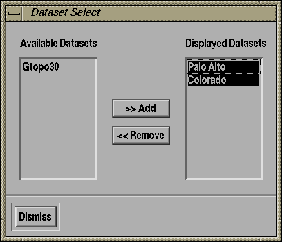
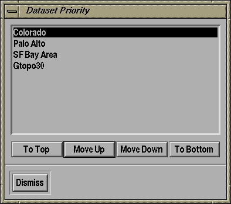

The Datasets menu provides facilities for managing the display of multiple datasets for a single 3-D viewer.

For example, in the screen shot opposite we can see that the user has loaded 3 datasets into TerraVision. However, the user has removed the Gtopo30 dataset from the current view so only the Palo Alto and Colorado dataset will be displayed. You remove a dataset from the view by clicking on its name in the right pane and clicking "<< Remove". It will then be moved from the right pane to the left pane. You can redisplay a dataset by clicking on its name in the left pane and then clicking ">> Add". It will then be moved to the right pane and you will be able to view the dataset once more in the viewer.
 |
The Dataset Priority dialog lets you alter the priority which is used
to display multiple datasets. In other words, the order in which
datasets are displayed. For example, if you have a model of the earth
and a model of the San Francisco Bay Area, then if you display the
model of the earth last then it will obliterate the Bay Area model.
Therefore, this dialog lets you interactively change the display priority for all datasets in a particular 3-D viewer. The highest priority datasets (rendered last) show appear at the top of this list. For example, in the screenshot to the left, the Gtopo30 (World) dataset is displayed first, then the Bay Area is displayed on top of that, then Palo Alto is displayed on top of that. The Colorado dataset is not overlapping with either the Bay Area or the Palo Alto dataset so it can appear anywhere higher up than Gtopo30. |